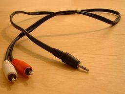
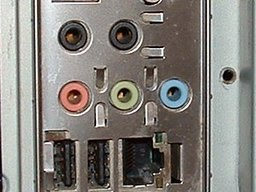

How to connect your equipment
Connecting your equipment
Generally there are only two such suitable inputs:
- A line-in computer input (blue) that is separate from the computer's microphone input (usually pink)
- Failing that, a line-in input on a USB or Firewire interface.
Connecting to line-in of the computer
In general, you need to run an appropriate cable from an output on the external device (for example a tape deck, or a phono amplifier or receiver connected to a turntable) to the line-in port of the computer. Do not connect to the mic-in port of the computer. A standalone turntable should not generally be connected directly to the computer unless you are making specialist recordings from pre-1950s discs.
The best option is usually to connect to the source device's "aux out", "tape out", "line-out" or "record" output (if so equipped). These outputs standardize the signal at a fixed (non-adjustable) level of approximately 1 - 1.5 volts, resulting in a high quality recording, whereas the headphones output will add an extra stage of possibly low-quality amplification in order to provide an adjustable level. It may occasionally be preferable to connect to the headphones output if it is otherwise hard to prevent the recording from distorting due to clipping (excessive volume). For example, some MiniDisc players have extremely strong line-level outputs that may tax even a high quality line-in.
Connecting to the "aux out", "tape out" or "record" jack of the device requires a cable that has dual RCA red/white plugs at one end (for connecting to the device) and a stereo 1/8 inch (3.5 mm) plug at the other end (for connecting to the computer's line-in port).
If it is necessary to connect to the headphones out of the device, you can typically use a cable that has a stereo 1/8 inch (3.5 mm) plug at both ends, plugging one end into the headphones jack and the other end into the computer's line-in port. If the device has a 1/4 inch (6.3 mm) headphone jack, you will need a 1/4 inch to 1/8 inch adapter. Such an adapter is often included free with new headphones, or can be purchased separately at any good electronics store.
Here is a typical cable you might use for equipment with RCA outputs (an RCA to stereo 1/8 inch (3.5 mm) mini-jack cable):
- 
The RCA end might connect to the output jacks in the back of your cassette player:

The stereo mini-jack end should be connected to your computer's stereo line-in jack, usually found on the back of desktop machines. The line-in is normally colored blue, but check your computer manual.
- 
|
You should not generally connect to the microphone (pink) port or to a sole audio input on the computer.
|
The following are the only exceptions where it might be appropriate to connect to a computer microphone input.
- Some personal recorders only have a low power mini-jack intended for connection to the microphone input of a recorder. If the jack is 3/32 inch (2.5mm) it is probably intended for connection to a microphone input and may already come with a suitable cable. Look at the manual for the recorder.
- On some Macs, or some Windows laptops or desktops, there is a "switchable" single input port which can be toggled to line-level stereo. Check your computer manual to see if there is a switch on the computer itself or in the audio interdace control panel. On a few laptops the line-level source is called "mix" or "stereo mix", but on most machines "stereo mix" will only record computer playback.
- On recent Windows laptops, notebooks or netbooks, there may be a "compliant" single port which will tolerate line level input and may provide stereo input. Even if stereo, the quality may not be as high as that of a dedicated line-in port.
Always try line-level input first, and only use a microphone input if you cannot otherwise get adequate recording volume.
Add a USB external audio interface for line-level input
If the computer has no separate or switchable line-level input, add a line-in by adding a USB audio interface that connects to the computer via USB. A Firewire interface can be used instead, but these are more expensive than entry-level USB audio interfaces. Examples of USB devices known to work with Audacity:
- Behringer UCA202 (left and right RCA inputs/outputs)
- Roland Duo Capture mk2 (1/8 inch plus 1/4 inch input jacks and 1/8 inch mini-jack output)
- Griffin iMic (standard 1/8 inch input) - Discontinued but still obtainable from some online retailers.
You can read more details of the above devices and about other suitable devices on our Wiki (USB interfaces known to work with Audacity).
Plug the RCA leads from your playback equipment into the USB audio interface and plug the audio interface into a USB socket on your computer. Always connect to a spare USB port. Connecting to a USB hub attached to a USB port is almost certain to cause audio dropouts.
It is also advisable in the interests of minimizing USB noise to plug all mains-powered equipment into the same mains board or into a multi-socket surge/lightning protected power-block.
Connecting a tape deck
If you wish to record from an audio cassette, or a reel-to-reel tape deck, you can connect that deck directly to your computer without the need for any external amplifier or receiver. Simply connect the deck's "line-out" RCA jacks to your computer's "line in" jack, using a cable described above. You can also connect to the headphones out jack of an integrated cassette deck or to that of an amplifier connected to the tape deck. If you do this (or if the "line-out" volume of your deck is adjustable), it is best to set that level quite close to its maximum, and adjust the recording level using Audacity's input volume slider (see below). This helps keep the inherent tape noise to a minimum in the signal sent to Audacity. If the cassette you are playing has been encoded with Dolby ® as denoted by the Dolby Double-D symbol, then you must enable Dolby playback on your tape deck, or the recording of the tape will sound over-bright.
Connecting a standalone turntable
If you have a standalone turntable, you must not connect it directly to your computer. Instead, you must connect it to an amplifier or receiver with a "phono" or turntable input, or to a phono pre-amp - and then record from the amplifier's "line out" or "tape out" jacks. This is for two reasons: (1) the audio signals produced by a phono cartridge are too weak to record directly, and (2) most records manufactured from the 1950s onwards were produced with a standard type of equalization called "RIAA", which emphasizes high frequencies and de-emphasizes (reduces) low frequencies. If left uncorrected, this will result in a recording that sounds very "tinny". All amplifiers containing a "phono" stage will both boost the signal to line-level so it's suitable for input into a tape deck or a computer, and will reverse the RIAA equalization so that the records sound "normal" again. If you have an integrated "stack system" or "entertainment center" into which you plug your speakers, your record deck is already connected to a suitable amplifier.
| Advanced technique: It is possible to directly connect a standalone turntable to the line input of a high quality audio interface, if you are prepared to perform the amplification and RIAA equalization yourself in Audacity. has a suitable RIAA preset. Discs pre-dating RIAA equalization such as 78 rpm's sound too dull if recorded through a standard amplifier using RIAA playback equalization. A solution is to record without RIAA playback equalization, either by connecting the turntable directly to a audio interface with a "high-gain" input, or by using a "flat" amplifier that applies only signal gain. The recorded waveform can then be re-equalized using an appropriate pre-RIAA or 78 rpm playback EQ curve. Suitable curves may be downloaded from the Wiki. |
Connecting a USB turntable or USB cassette deck
A USB turntable is a type of turntable which is designed to connect directly to your computer's USB port. The concerns noted in the 'standalone turntable' section above do not apply here, as the necessary pre-amplification and RIAA equalization are already built into the USB turntable. There are also USB cassette decks available which are similarly designed to connect directly to your computer's USB port. There are some special playback and recording device settings you need to observe when using USB devices - see Recording with USB turntables or USB cassette decks
Connecting a MiniDisc player
Some users find that the line-level output of MiniDisc players is too strong for recording on a computer and causes distortion, since its level is not adjustable. If you are encountering this problem, try connecting your cable to the player's headphone jack instead. Since the strength of the headphone signal is easily adjustable, you can then reduce the signal level sent to the PC. On most players, this means using the same shared line out/headphones out socket/jack, but choosing the headphones out option in the player's "Sound Out" Preferences menu.
If you have an audio interface which has digital outputs, connect from digital out of the MiniDisc player to the S/PDIF input of the audio interface.